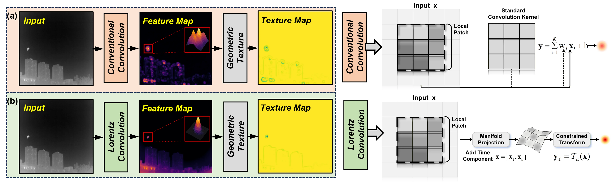
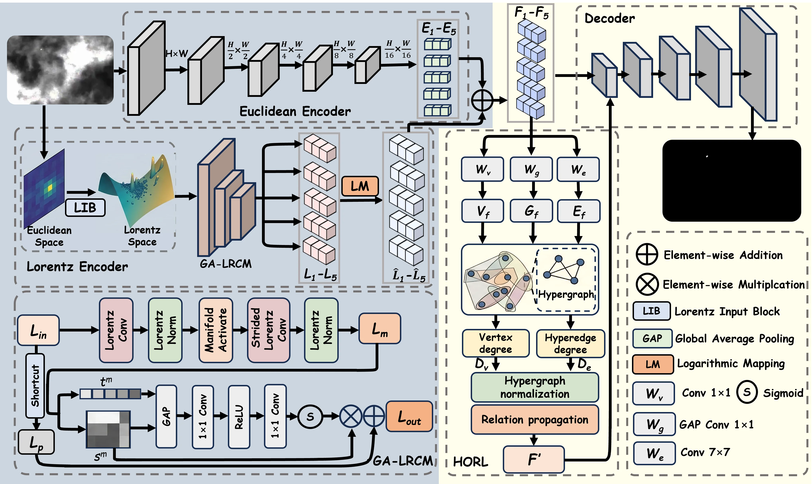
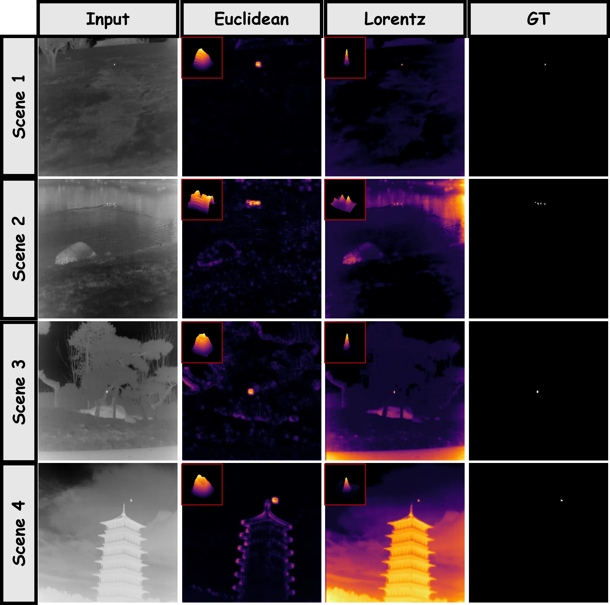
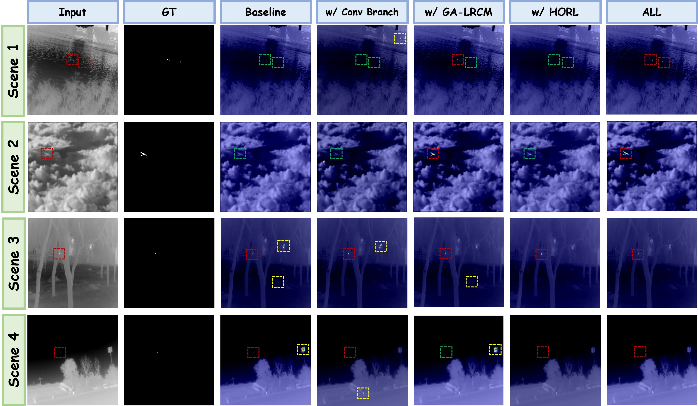
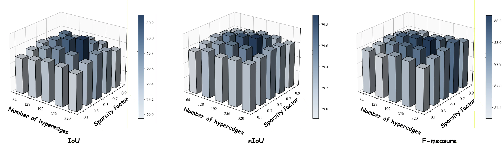
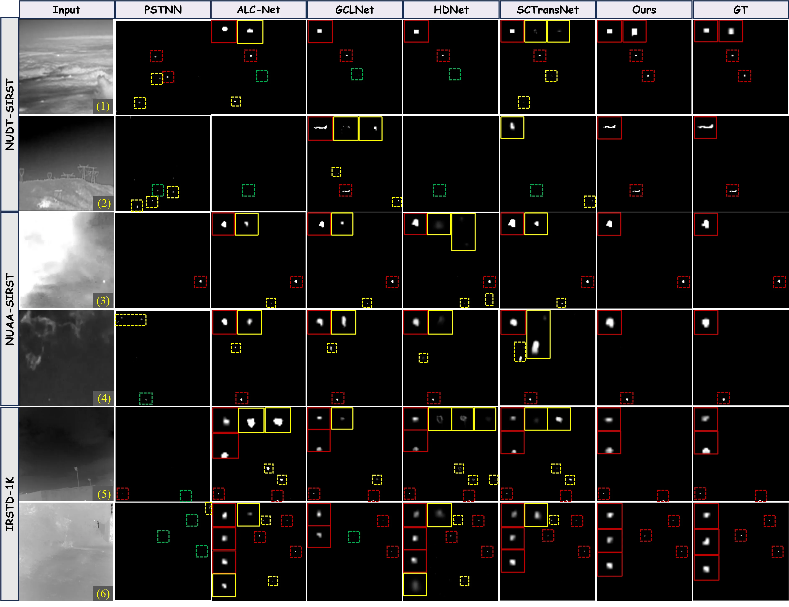

LoHGNet 论文精读
1.1 IRSTD 的重要性与独特难点
我们可以看到，红外小目标检测（Infrared Small Target Detection, IRSTD）是搜索救援预警、目标监视和精确制导等应用中的关键技术 #wu2026dfinet。然而，与常规的可见光目标检测相比，IRSTD 面临着一系列本质性的困难：红外小目标通常仅占据几个像素，纹理和结构信息极其有限，信噪比极低 #ji2026three。这意味着，在复杂场景中，目标的响应极易被云边缘、明亮地面区域和传感器噪声所淹没，使得特征建模和准确检测的难度大幅上升。
一个自然的疑问是：既然深度学习已经在通用目标检测中取得了巨大成功，为什么不能直接迁移到 IRSTD？答案在于，红外小目标的判别线索与可见光目标有着根本差异。可见光目标通常具有丰富的纹理、清晰的边界和较大的空间占比，检测模型可以依赖局部外观特征完成识别；而红外小目标的信号过于微弱，单凭局部响应强度几乎无法将其与背景杂波区分开来——检测的成功与否，更多取决于目标与背景之间那些微妙且层次化的结构差异 #ciocarlan2026anomaly #wu2026semdetnet。
1.2 现有方法的两个共性缺陷
过去数十年间，IRSTD 已经从基于手工特征的模型驱动方法发展到以卷积神经网络为主导的数据驱动范式 #chen2026dcganet。非对称上下文调制 #2021asymmetric、密集嵌套连接 #li2022dense、注意力建模 #dai2021attentional、跨层交互 #wu2022uiu 以及近期的 Mamba 架构 #liu2025mou、KAN 网络 #wu2025kpf 和大模型先验 #fu2025unified 等策略不断推高检测性能。然而，当我们审视这些方法的底层设计时，可以发现两个共性的结构性缺陷。
缺陷一：欧氏空间的平坦度量无法描述弱目标的层次几何结构
绝大多数现有网络在欧氏空间中学习特征。欧氏空间具有平坦且均匀的度量结构，擅长描述局部连续变化，但对于弱目标与复杂背景之间的非均匀、层次化几何关系却力不从心。这意味着，在深层传播和反复下采样的过程中，与弱目标相关的结构线索很容易被主导的背景信息稀释，网络难以放大真目标与假响应之间的表征差距。
缺陷二：局部感受野或成对交互无法建模高阶上下文依赖
现有方法主要通过局部感受野（CNN）或成对自注意力机制（Transformer）来建模上下文关系。这类设计本质上只能捕获两个元素之间的交互，对于多个区域同时参与的高阶语义依赖则无能为力。而在复杂的红外场景中，区分真实目标和由背景引起的虚假响应，恰恰需要理解目标与多个背景区域之间的多元高阶关系。
1.3 LoHGNet 的核心 Insight
针对上述两个根本挑战，LoHGNet 提出了一个全新的解决思路：将洛伦兹双曲几何编码与超图高阶关系学习相结合。
LoHGNet 的核心设计哲学是"几何编码引导高阶关系学习"：首先在洛伦兹空间中进行层次化几何编码，使特征获得更强的层次可分性；然后在此基础上构建超图并进行高阶关系传播，利用学到的几何先验来指导上下文推理。两者在 IRSTD 任务中的结合，为复杂背景下弱目标的检测提供了新的视角。
1.4 论文定位与本系列的关系
本文属于「红外轮廓图像压缩系列」论文精读（六），定位为 CV 前沿借鉴。LoHGNet 本身并不直接提出压缩算法，但其核心价值在于为红外压缩的下游评价提供了新的维度。IRSTD 是红外图像最重要的下游应用之一，如果洛伦兹几何编码能显著提升检测性能，那么保留这些几何结构特征的压缩方案就具有明确的实用价值。这为 ICM（Image Compression Metric driven by downstream task）评价体系引入了"几何感知质量"的新视角。此外，HORL 输出的节点-超边关联矩阵可作为语义重要性图，直接指导压缩中的感兴趣区域（ROI）编码策略，实现对目标区域的自适应比特分配。该团队的 IOVarNet #deng_iovarnet_2025 和 OIPF #ma2025oipf 分别从变化协同和正交输入角度改进 IRSTD，而 LoHGNet 从几何表示角度切入，三者构成方法论上的互补三角。
2.1 一个对比实验看清问题
为了直观理解欧氏空间在 IRSTD 中的局限，我们可以观察论文 Fig.1 中展示的对比实验。该图并排展示了两种特征聚合方式在相同红外场景下的响应差异。
左侧是传统的欧氏卷积，其本质是局部加权求和 \(y=\sum_{i=1}^{K} w_i \mathbf{x}_i+b\)。我们可以看到，在复杂背景下，这种线性聚合产生的特征响应较为分散，目标区域的峰值不够尖锐，且容易与周围的背景杂波混为一体。右侧是洛伦兹流形变换：首先将特征映射到洛伦兹表示 \(\mathbf{x}=[\mathbf{x}_t,\mathbf{x}_s]\)，然后在洛伦兹流形上执行非线性特征变换 \(\mathbf{y}_{\mathcal L}=\mathcal{T}_{\mathcal L}(\mathbf{x})\)。结果显示，洛伦兹分支产生了更集中的目标响应和更清晰的背景结构组织。
更有说服力的是图中右侧的 3D 响应图对比。欧氏卷积的响应面呈现出平坦、弥散的形态，目标与背景的峰值高度差异不明显；而洛伦兹卷积的响应面则展现出更尖锐、更紧凑的峰值，目标区域的响应显著高于周围背景。这说明洛伦兹特征的非均匀特性更贴近原始目标的响应分布——红外小目标本身就是空间中一个局部的、尖锐的异常点，而非一片均匀的区域。洛伦兹空间的负曲率度量天然放大了这种"尖峰 vs 平坦"的差异，使得目标在特征空间中更容易被分离出来。

2.2 欧氏空间的平坦度量局限
让我们用更教学化的语言来解释这个问题。欧氏空间的度量是"平坦"的——空间中任意两点之间的距离由直线段给出，所有方向等价，体积随距离呈多项式增长。这种几何结构非常适合描述局部连续变化的信号，例如自然图像中的平滑渐变和规则纹理。然而，红外小目标的判别线索并不遵循这种局部连续性。
一个典型的红外小目标可能只有 3×3 个像素大小，其灰度值仅比周围背景高出几个单位。在欧氏空间中，这样一个微弱的局部异常与同样微弱的背景噪声在度量上几乎没有区别——它们之间的距离很小，特征表示高度重叠。要从这样的混淆中把真目标提取出来，网络必须依赖从局部异常响应到更广结构上下文的层次化线索：真目标虽然局部微弱，但它在更大尺度上与背景的统计分布、空间结构和时序行为存在系统性差异。问题在于，欧氏空间的平坦度量"一视同仁"地对待所有尺度的特征差异，无法自动放大这种层次化的判别信息。随着网络逐层下采样，弱目标的微弱结构线索被越来越强的背景主导信息所稀释，最终消失在深层特征的噪声基底中。
相比之下，洛伦兹双曲空间的负曲率使其体积随距离呈指数增长。这意味着，在双曲空间中，具有层次关系的特征可以被自然地"拉开"——靠近原点的区域编码通用的、共享的特征，远离原点的区域编码特异的、细分的特征。Nickel & Kiela 的实验表明，在词层级关系嵌入任务中，洛伦兹嵌入仅用 5 维就达到了欧氏嵌入需要 200 维才能达到的性能 #nickel2018learning。这种高效的层次表达能力正是 IRSTD 所需要的：它能够在不增加特征维度的前提下，将弱目标与背景之间的细微层次差异放大为显著的几何距离。消融实验也证实了这一点——仅将编码器从欧氏替换为洛伦兹（不添加任何额外模块），NUDT-SIRST 上的 IoU 就从 91.04% 提升到 93.23%，提升了 2.19 个百分点。
2.3 成对交互的局限
除了几何度量的问题，现有方法在上下文关系建模上也存在结构性瓶颈。CNN 的感受野本质上是局部的，即使通过堆叠多层扩大感受野，信息的传递仍然是逐邻域扩散的。Transformer 的自注意力机制虽然能够建模全局依赖，但其核心操作是 query-key 之间的成对点积——每次交互只涉及两个元素。这意味着，当场景中需要同时考虑三个或更多区域之间的联合关系时，成对交互只能通过多步传递间接实现，效率低下且容易丢失高阶信息。
在复杂的红外场景中，这种局限尤为突出。一个真实的红外小目标可能同时与云层边缘、地面亮斑、传感器条纹等多种背景干扰源产生交互。要正确判断某个局部响应是否为真目标，网络需要同时理解它与所有这些背景区域的联合关系——这不是简单的"目标 vs 某一个背景"的成对比较，而是"目标 vs 一组背景的组合模式"的高阶推理。超图恰好提供了这种能力：一条超边可以同时连接任意多个节点，天然描述了多元高阶关联 #feng2019hypergraph。Han 等人进一步指出，"一幅图像不仅仅是节点的图"，常规图结构可能丢失不同区域间的高阶语义关系 #han2023vision。LoHGNet 的 HORL 模块正是基于这一认识，通过自适应构造超图并进行高阶关系传播，来捕获目标与复杂背景之间的多元上下文依赖。消融实验表明，去掉超图结构后（即 Eq.9 中 \(\mathbf{P}_H = \mathbf{I}\) 的简化情形，HORL 退化为纯线性变换），NUDT-SIRST IoU 下降 1.10 个百分点，确认了高阶关系建模的不可替代性。
3.1 整体架构：为什么需要双分支
在红外小目标检测任务中，一个长期困扰研究者的问题是：目标的像素级响应极其微弱，往往只有几个到十几个像素，且与周围背景杂波的强度差异很小。如果我们仅依赖单一的欧氏编码分支，卷积操作的局部加权聚合本质上是在平坦空间中做线性组合——它擅长保留纹理细节，却难以放大目标与背景之间那种微妙的、非线性的结构差异。这意味着，当背景中存在亮边缘、云层散射等强干扰时，弱目标线索很容易被"稀释"在平滑的特征响应中。
LoHGNet 的设计直觉是：用两条互补的分支分别捕获不同性质的信息。一条分支（Euclidean Branch）留在我们熟悉的欧氏空间中，负责保留像素级的强度信息和局部纹理细节，充当网络的"保底层"；另一条分支（Lorentz Branch）则将特征映射到双曲空间，利用负曲率几何天然的层次表达能力来建模目标与背景之间的结构化差异。这两条分支并非各走各路，而是在每个尺度上通过显式融合交换信息。

下面这张流程图把 Fig.2 的架构压缩成信号流视角，便于对比两条分支在每个尺度上的处理差异：
flowchart TD I["输入红外图像
I ∈ R^{1×H×W}"] --> EB["Euclidean Branch
标准卷积 + 下采样"] I --> LIB["LIB
洛伦兹流形投影"] EB --> E1["E₁ ··· E₅
多尺度欧氏特征"] LIB --> G1["GA-LRCM × N
几何注意力 + 流形约束"] G1 --> L1["L₁ ··· L₅
多尺度双曲特征"] L1 --> LOG["log_o 对数映射
丢弃时间分量"] LOG --> LH1["L̂₁ ··· L̂₅
切空间空间分量"] E1 --> F1["F_i = L̂_i + E_i
逐尺度融合"] LH1 --> F1 F1 --> DEEP["深层 F_deep"] F1 --> SKIP["浅层 skip 特征"] DEEP --> HORL["HORL 超图推理
F' = FΘ − P_H FΘ"] HORL --> DEC["渐进解码器"] SKIP --> DEC DEC --> OUT["检测结果图"]
具体来看，给定输入红外图像 \(\mathbf{I} \in \mathbb{R}^{1 \times H \times W}\)，欧氏分支通过一系列标准卷积与下采样操作产出多尺度特征 \(\{\mathbf{E}_i\}_{i=1}^{5}\)。与此同时，洛伦兹分支首先通过 LIB（Lorentz Input Block）将欧氏特征提升到洛伦兹流形上，再经过多个堆叠的 GA-LRCM 模块进行层次化几何编码，产出多尺度双曲特征 \(\{\mathbf{L}_i\}_{i=1}^{5}\)。关键在于：整个编码过程中，洛伦兹分支的特征始终停留在流形上，层次几何约束从未被打破，直到对数映射阶段才回到欧氏切空间。
在每个尺度 \(i\) 上，洛伦兹特征经对数映射 \(\log_{\mathbf{o}}\) 后被拉回欧氏切空间，仅保留空间分量 \(\hat{\mathbf{L}}_i\)，然后与对应的欧氏特征逐元素相加：
这个看似简单的加法背后有深刻的设计考量：\(\mathbf{E}_i\) 提供了"目标在哪里亮"的局部线索，而 \(\hat{\mathbf{L}}_i\) 提供了"目标的层次几何结构如何区别于背景"的全局几何线索。两者的量纲在对数映射后已统一到欧氏空间，直接相加是合理的。融合后的深层特征经过 HORL 模块进行高阶关系建模，再与浅层融合特征一起送入渐进解码器，逐步上采样恢复空间分辨率，最终输出检测结果。
3.2 洛伦兹流形基础：教学式推导
要理解 LoHGNet 的方法论，我们必须先建立对洛伦兹模型的直觉。让我们从头推导。
洛伦兹模型定义在 \((n+1)\) 维 Minkowski 空间 \(\mathbb{R}^{n+1}\) 中。一个点写作 \(\mathbf{x} = [\mathbf{x}_t, \mathbf{x}_s]\)，其中 \(\mathbf{x}_t \in \mathbb{R}\) 是时间分量（temporal component），\(\mathbf{x}_s \in \mathbb{R}^n\) 是空间分量（spatial component）。请注意，这里的"时间"并非物理时间，而是一个额外的维度标记，用于定义双曲几何结构。
Minkowski 空间上的内积不是我们熟悉的欧氏内积，而是洛伦兹内积：
我们可以看到，与欧氏内积的唯一区别在于时间分量前有一个负号。正是这个负号赋予了空间完全不同的几何性质——它使得"距离"的定义从球面变成了双曲面。
洛伦兹流形 \(\mathcal{L}_k^n\) 定义为 Minkowski 空间中满足以下约束的点集：
展开约束条件 \(\langle \mathbf{x}, \mathbf{x} \rangle_{\mathcal{L}} = -k\)，我们得到 \(-\mathbf{x}_t^2 + \|\mathbf{x}_s\|_2^2 = -k\)，即：
这意味着时间分量完全由空间分量决定。虽然洛伦兹流形嵌入在 \((n+1)\) 维空间中，但它本质上是一个 \(n\) 维流形——自由度恰好等于空间分量的维度。这个性质在实现中极为重要：我们只需要维护空间分量，时间分量可以随时重建。
常数 \(k > 0\) 与流形的截面曲率直接相关，曲率为 \(-1/k\)。当 \(k\) 较大时流形更"平坦"，更接近欧氏空间；当 \(k\) 较小时双曲效应更强，层次结构的表达能力更突出。
3.3 LIB：把欧氏特征"提升"到双曲空间
LIB（Lorentz Input Block）是洛伦兹分支的入口，承担着将欧氏特征"提升"到双曲空间的关键任务。它的操作流程分为两步：首先给空间分量添加一个时间维度，然后将拼接后的向量投影到洛伦兹流形上，使其严格满足 \(\langle \mathbf{x}, \mathbf{x} \rangle_{\mathcal{L}} = -k\) 的约束。投影操作通常为 \(\mathbf{x}_t \leftarrow \sqrt{k + \|\mathbf{x}_s\|_2^2}\)，即直接用空间分量重新计算时间分量。
我们可以这样理解 LIB 的物理意义：它将原本"平铺"在欧氏空间中的特征"弯曲"到了双曲空间中。在欧氏空间中所有方向等价，特征之间的距离均匀增长；而在双曲空间中，体积随距离呈指数增长，具有层次关系的特征能够被更自然地组织。对于 IRSTD 而言，目标与背景之间的微妙差异正是一种层次化的区分——虽然在像素级响应上相似，但在更高层次的结构关系中却占据不同的位置。LIB 为后续的几何编码提供了这种层次化表达的起点。
3.4 GA-LRCM：几何注意力引导的洛伦兹残差卷积模块
GA-LRCM 是洛伦兹编码分支的核心构建块。设模块输入为 \(\mathbf{L}_{\mathrm{in}} = [\mathbf{t}_{\mathrm{in}}, \mathbf{s}_{\mathrm{in}}]\)，主分支依次执行 Lorentz Convolution、Lorentz Normalization、Manifold Activation 和 Strided Lorentz Convolution。在这些操作中，一个关键的数值稳定性措施是时间分量下界保护：由于卷积更新可能导致时间分量过小甚至变为负值，实现中对时间分量设置下界，并在每次卷积后根据空间分量重新重建 \(\mathbf{t} = \sqrt{k + \|\mathbf{s}\|_2^2}\)，确保特征始终位于流形上。
几何注意力机制是 GA-LRCM 的精髓所在。设主分支在注意力之前的输出为 \(\mathbf{L}_m = [\mathbf{t}^m, \mathbf{s}^m]\)，注意力权重计算为：
其中 \(\mathit{GAP}(\cdot)\) 是全局平均池化，\(\delta(\cdot)\) 是 ReLU，\(\sigma(\cdot)\) 是 Sigmoid，\(\mathbf{W}_1\) 和 \(\mathbf{W}_2\) 是两个可学习的 \(1\times1\) 卷积变换。我们可以看到，这个注意力机制同时利用了时间分量和空间分量的全局统计信息。时间分量反映了特征点在双曲空间中距原点的"深度"，空间分量承载了具体的特征内容。这与传统 SE-Net 等欧氏注意力有本质区别：后者仅基于欧氏特征的统计量，而几何注意力的输入本身就包含了双曲几何的结构信息。
由于 GA-LRCM 包含下采样操作，shortcut 分支通过 projection-based residual alignment 进行尺度和通道对齐，输出记为 \(\mathbf{L}_p = [\mathbf{t}^p, \mathbf{s}^p]\)。融合策略是整个模块最关键的设计决策：
3.5 对数映射：把双曲特征拉回欧氏切空间
对数映射是将洛伦兹流形上的特征转换回欧氏空间的桥梁。设 \(\mathbf{o} = [\sqrt{k}, \mathbf{0}]\) 为参考原点，\(\mathbf{L}\) 为流形上的任意特征点。推导分三步进行。
第一步，计算测地线距离：
由于 \(\mathbf{o}\) 和 \(\mathbf{L}\) 都在流形上，\(\langle \mathbf{o}, \mathbf{L} \rangle_{\mathcal{L}} \leq -k\)，保证了 \(\mathit{arcosh}\) 的自变量在定义域内。第二步，计算切方向：
第三步，对数映射：
对数映射的结果是切空间中的一个向量，其方向指向 \(\mathbf{L}\)，长度为从 \(\mathbf{o}\) 到 \(\mathbf{L}\) 的测地线距离。
在实际实现中，原文明确指出"after logarithmic mapping, we discard the temporal component and keep only the spatial component"。这一简化的合理性在于：在原点处的切空间中，空间分量已经编码了足够的几何信息（包括到原点的距离信息，因为它影响了切向量的模长），丢弃时间分量不会造成信息损失。对数映射的本质是将弯曲的双曲空间"展开"到平坦的欧氏切空间中，使得后续的标准欧氏操作能够在保留几何信息的前提下正常工作。
3.6 HORL：高阶关系学习模块
HORL 是 LoHGNet 的第二个核心创新，它在欧氏切空间中构建超图并进行高阶关系传播。设输入特征为 \(\mathbf{F}\)，HORL 通过三个可学习分支提取超图构造所需的组件：\(\mathbf{W}_v\)（\(1\times1\) 卷积）提取紧凑的顶点特征 \(\mathbf{V}_f\)；\(\mathbf{W}_g\)（GAP + \(1\times1\) 卷积）提取场景级全局引导矩阵 \(\mathbf{G}_f\)；\(\mathbf{W}_e\)（大核卷积）提取跨区域空间模式作为超边特征 \(\mathbf{E}_f\)。
关联矩阵的构造公式为：
其中 \(\mathbf{V}_f \mathbf{G}_f \mathbf{V}_f^\top\) 衡量了在全局上下文引导下每对顶点之间的关联强度，乘以 \(\mathbf{E}_f\) 后将关联投射到超边空间，取绝对值保证非负权重。\(\mathbf{H}\) 完全从输入特征动态生成，不同图像产生不同的超图结构。
在复杂红外场景中，初始关联矩阵往往包含大量由背景边缘和噪声引起的弱连接。稀疏约束通过自适应阈值过滤低置信度连接：
参数分析实验表明最优稀疏因子 \(\lambda = 0.5\)，最优超边数量为 256。归一化交互矩阵为：
其中 \(\mathbf{D}_v\) 和 \(\mathbf{D}_e\) 分别是顶点度矩阵和超边度矩阵，防止高度数顶点或覆盖大量顶点的超边主导信息流。
关系传播公式为：
3.7 洛伦兹空间的特征优势：可视化佐证
理论分析之外，原文提供的特征可视化（Fig.5）为洛伦兹空间的优势提供了直观佐证。该图在 4 个不同场景下对比了同尺度、同网络层级中欧氏空间和洛伦兹空间的特征图。我们可以观察到：欧氏特征图能高亮部分目标区域，但在复杂场景中响应相对分散，容易将邻近响应混合在一起；而洛伦兹特征图在目标周围表现出更集中的响应，在弱目标和强背景干扰场景中保持了更好的分离性。右侧的 3D 响应图进一步表明，欧氏空间的峰值通常更平坦和扩散，洛伦兹空间的峰值更紧凑。

这些可视化直接支撑了论文的核心论点：洛伦兹空间提供了不同于欧氏空间的特征表示，为整个网络提供了有用的几何线索。需要注意的是，这是在相同网络层级、相同尺度下的对比，排除了架构差异的影响，因此可以确信观察到的差异确实来源于几何空间本身的不同特性。
4.1 数据集
LoHGNet 的实验在三个广泛使用的 IRSTD 基准数据集上开展，分别是 NUDT-SIRST #li2022dense、NUAA-SIRST #2021asymmetric 和 IRSTD-1K #zhang2022isnet。这三个数据集涵盖了多种复杂红外场景，包括不同天气条件下的天空背景、地面与海面场景、以及各类信噪比条件下的弱小目标，合计包含数百张至约千张图像。为保证对比公平性，所有实验严格遵循各数据集原始论文发布的官方训练/测试划分。
NUDT-SIRST 由国防科技大学发布，是当前 IRSTD 研究中最具挑战性的 benchmark 之一，背景复杂度较高，目标以远距离小点目标为主。NUAA-SIRST 由南京航空航天大学发布，是该领域最经典的基准，场景多样性好，被大量方法用作主要对比平台。IRSTD-1K 由 ISNet 论文发布，注重场景多样性和标注质量，涵盖各种复杂背景和不同信噪比条件。需要指出的是，原文未给出各数据集的具体图像数量、分辨率范围和目标尺寸分布等统计信息。
4.2 训练配置
根据原文 Implementation Details，已披露的训练超参数如下：
| 配置项 | 值 | 来源 |
|---|---|---|
| 训练轮数（Epochs） | 1000 | tex §IV-A.3 |
| 批量大小（Batch Size） | 4 | tex §IV-A.3 |
| 输入裁剪尺寸 | 256 × 256 | tex §IV-A.3 |
| GPU | NVIDIA RTX 4090D（单卡） | tex §IV-A.3 |
| 深度学习框架 | PyTorch | tex §IV-A.3 |
| 数据预处理 | 先归一化，再裁剪为 256×256 patch | tex §IV-A.3 |
4.3 未披露信息清单
这篇论文的 Implementation Details 段落极为简短（仅 3 句话），在可复现性方面存在显著缺口。以下关键训练信息在原文中均未明确给出：
| 缺失内容 | 影响程度 | 说明 |
|---|---|---|
| 优化器类型及参数 | 严重 | 未提及 Adam / SGD / AdamW，也未给出 beta、weight decay、momentum 等参数 |
| 学习率初始值及调度策略 | 严重 | 未提及 cosine annealing、step decay、warmup 等任何调度方式 |
| 损失函数形式 | 严重 | 对于正负样本极度不平衡的 IRSTD 任务，BCE / IoU Loss / Focal Loss 的选择对性能影响重大 |
| Checkpoint 选择策略 | 中等 | 未说明使用 last epoch、best validation 还是其他策略 |
| 数据增强细节 | 中等 | 仅提到"normalized and then cropped"，裁剪是随机还是中心、是否使用翻转/旋转/缩放均未说明 |
| 训练总时长 | 低 | 未披露 1000 epochs 的实际耗时 |
对于一篇声称代码将开源的工作而言，上述信息的缺失使得精确复现实验变得困难。建议读者在尝试复现时优先联系作者获取完整训练配置，或关注其 GitHub 仓库（github.com/Kingwin97）的代码更新。
5.1 双分支前向传播
LoHGNet 的推理过程遵循训练阶段确定的双分支并行编码 + 渐进解码架构。给定一张输入红外图像，推理链路如下：
第一步：双分支并行编码。 输入图像同时送入两个编码器。Euclidean Branch 通过标准卷积与下采样操作提取多尺度局部外观特征 {E_i}（i=1,...,5），保留像素级强度信息和局部纹理细节。Lorentz Branch 首先通过 LIB 将欧氏特征映射到洛伦兹流形上，然后经过多个堆叠的 GA-LRCM 模块进行层次化几何编码，产出多尺度双曲特征 {L_i}。整个编码过程中特征始终停留在洛伦兹空间内，层次几何约束从未被打破。 第二步：逐尺度对数映射与融合。 在每个尺度 i 上，洛伦兹特征 L_i 经过对数映射 log_o 被拉回欧氏切空间，仅保留空间分量作为 L̂_i，然后与对应的欧氏特征 E_i 进行逐元素相加融合：F_i = L̂_i + E_i。这一步将"目标在哪里亮"的局部线索与"目标的层次几何结构如何区别于背景"的全局几何线索对齐叠加。 第三步：HORL 超图推理。 深层融合特征送入 HORL 模块，在欧氏切空间中动态构建超图、执行稀疏约束过滤无效连接、归一化交互矩阵，并通过减法传播公式 F' = FΘ − P_H F Θ 实现背景抑制与目标增强的双重效果。 第四步：渐进解码。 经 HORL 处理后的深层特征与浅层融合特征一起送入渐进解码器，通过 skip connection 逐级注入不同尺度的融合特征 F_i，逐步上采样恢复空间分辨率，最终输出检测结果图。5.2 推理复杂度
论文未披露以下系统部署的关键信息：
| 缺失指标 | 重要性 | 说明 |
|---|---|---|
| 模型参数量（Parameters） | 高 | 无法评估模型规模与存储需求 |
| 计算量（FLOPs） | 高 | 无法与其他方法进行效率对比 |
| 推理延迟 / FPS | 高 | 无法判断是否满足实时应用需求 |
| 吞吐量（Throughput） | 中 | 无法评估批处理性能 |
考虑到洛伦兹分支引入了额外的双曲运算（流形投影、对数映射、arcosh 等），以及 HORL 的超图构造开销（关联矩阵 H 的大小随特征图空间尺寸二次增长），LoHGNet 的实际推理效率是一个重要的未知数。在与实时性要求较高的 IRSTD 应用场景对接时，这一信息的缺失是一个明显的局限。
6.1 评估指标
LoHGNet 采用五个标准指标进行全面评估：
| 指标 | 全称 | 物理意义 | 方向 |
|---|---|---|---|
| IoU | Intersection over Union | 预测与 GT 的像素级重叠度，衡量分割精度 | ↑ |
| nIoU | normalized IoU | 对目标尺度变化归一化的 IoU，在不同大小目标间提供更均衡的评价 | ↑ |
| F-measure | F-score | Precision 和 Recall 的调和均值，综合评估漏检和虚警 | ↑ |
| P_d | Probability of Detection | 正确检测到的目标占总目标的比例，反映检出能力 | ↑ |
| F_a | False Alarm Rate | 整幅图像中被误检为目标的像素占比，反映背景抑制能力 | ↓ |
论文特别指出 P_d 和 F_a 是"波动较大的指标"（relatively more fluctuating metrics），两者之间存在固有的 trade-off 关系。
6.2 主实验：与 20 个方法的全面对比
LoHGNet 与 7 个传统方法和 13 个深度学习方法在三个数据集上进行了全面对比。下表复刻了 Table 5 中代表性方法与 LoHGNet 的关键数值：
| Method | NUDT IoU | NUDT F | NUDT F_a | NUAA IoU | NUAA F | IRSTD IoU | IRSTD F |
|---|---|---|---|---|---|---|---|
| Top-Hat #zeng2006design | 20.72 | 33.52 | 166.700 | 7.14 | 14.63 | 10.06 | 16.02 |
| IPI #gao2013infrared | 17.76 | 26.94 | 41.230 | 25.67 | 43.65 | 27.92 | 35.68 |
| ACM #2021asymmetric | 69.00 | 81.58 | 15.970 | 68.18 | 81.20 | 55.09 | 70.83 |
| DNA-Net #li2022dense | 84.81 | 91.77 | 5.814 | 75.42 | 85.96 | 62.76 | 77.13 |
| UIU-Net #wu2022uiu | 93.48 | 96.63 | 7.790 | 75.74 | 86.20 | 65.37 | 78.62 |
| SCTransNet #yuan2024sctransnet | 93.08 | 96.32 | 7.170 | 75.72 | 86.05 | 63.46 | 77.09 |
| GCLNet #shen2025graph | 87.71 | 93.45 | 5.791 | 76.34 | 86.61 | 65.35 | 79.04 |
| HaarTransNet #fan2026haartransnet | 93.85 | 96.72 | 2.942 | 75.42 | 86.21 | 66.65 | 80.03 |
| LoHGNet | 95.61 | 97.67 | 1.609 | 77.26 | 86.80 | 68.03 | 80.28 |
6.3 消融实验：每个模块都不可或缺
7 个配置在 NUDT-SIRST 上的 IoU 变化清晰展示了各模块的贡献：
| Config | Conv Branch | GA-LRCM | HORL | NUDT IoU | NUAA IoU | IRSTD IoU |
|---|---|---|---|---|---|---|
| 1 (Baseline) | − | − | − | 91.04% | 73.95% | 63.21% |
| 2 | ✓ | − | − | 92.85% | 75.20% | 64.96% |
| 3 | − | ✓ | − | 93.23% | 75.71% | 65.47% |
| 4 | − | − | ✓ | 92.74% | 75.13% | 65.03% |
| 5 | ✓ | ✓ | − | 93.99% | 75.97% | 66.48% |
| 6 | − | ✓ | ✓ | 94.58% | 76.20% | 65.99% |
| 7 (Full) | ✓ | ✓ | ✓ | 95.61% | 77.26% | 68.03% |
从 Baseline 到 Full Model，IoU 分别提升 4.57 / 3.31 / 4.82 百分点（NUDT / NUAA / IRSTD-1K）。单模块贡献排序为 GA-LRCM（+2.19 pp）> Conv Branch（+1.81 pp）> HORL（+1.70 pp），在 NUDT-SIRST 上 GA-LRCM 单独贡献最大。组合效应方面，Config 6（GA-LRCM + HORL）的 IoU 94.58% 高于 Config 5（Conv + GA-LRCM）的 93.99%，表明洛伦兹几何编码与高阶关系学习的协同效果优于欧氏细节保留与几何编码的组合。任何缺少一个模块的配置都无法达到完整模型的性能，证明三个组件互补而非冗余。

消融可视化（Fig.6）进一步揭示了各模块的功能分工：GA-LRCM 主要负责增强弱目标的几何可判别性（Scene 2 中具有几何结构的目标只有含 GA-LRCM 的配置能正确建模），HORL 主要负责在复杂背景下区分真实目标和虚假响应（Scene 3/4 中高响应背景区域只有含 HORL 的配置能有效抑制）。
6.4 HORL 超参数分析
HORL 的两个关键超参数——稀疏因子 λ 和超边数量（number of hyperedges）——通过网格搜索确定最优值：
| 超参数 | 最优值 | 来源 |
|---|---|---|
| Sparsity factor λ | 0.5 | tex §IV-B.2 |
| Number of hyperedges | 256 | tex §IV-B.2 |

Fig.4 展示了在不同 sparsity factor 和 hyperedge 数量组合下 mean IoU、nIoU 和 F-measure 的变化趋势。核心观察如下：
性能呈"先升后稳"趋势，而非单调递增。 过弱的稀疏约束（λ 过小）不足以过滤无效连接，导致背景噪声通过超图传播；过强的稀疏约束（λ 过大）或过多的超边会引入冗余关系，同样损害性能。最优区域位于 λ=0.5、hyperedges=256 附近，此时模型在保持足够连接密度的同时有效抑制了低置信度干扰。值得注意的是，sparsity factor λ 的作用机制体现在 Eq.(8) 中：\(\mathbf{H}_s(i,j) = \mathbf{H}(i,j) \cdot \mathbb{I}(\mathbf{H}(i,j) > \lambda \cdot \mathit{mean}(\mathbf{H}))\)。这是一个基于均值的自适应阈值策略，而非固定绝对阈值，使得稀疏化程度能随不同输入场景自动调整。
6.5 定性对比与失败案例

Fig.7 在三个数据集上展示了 LoHGNet 与多个竞争方法的定性对比结果。
传统方法普遍高漏检高虚警。 Top-Hat、Max-Median 等传统方法在复杂场景中产生大量虚警和漏检，与其定量指标一致。 暗弱点目标场景。 在 Fig.7(1)(3) 所示的暗弱点目标场景中，多个深度学习方法仍产生虚警和漏检。LoHGNet 能更准确地定位真实目标，这主要归功于 GA-LRCM 在洛伦兹空间中进行的层次几何建模，更有效地放大了目标与背景之间的表征间隙，防止弱目标在特征传播过程中被复杂背景淹没。 结构化目标场景。 在 Fig.7(2) 所示的具有结构特征的目标场景中，部分竞争方法能检测到目标但结构不完整且有额外虚警。LoHGNet 的预测更紧凑完整，更接近 GT，说明几何编码过程在增强目标显著性的同时也改善了目标形状信息的表达。 强干扰背景场景。 在 Fig.7(5)(6) 所示的复杂背景和强干扰场景中，背景包含明亮散射区域和伪目标响应，大多数方法产生不同程度虚警。LoHGNet 在保持真实目标稳定响应的同时更有效地抑制了无关激活，这一优势主要来自 HORL 对深层特征间高阶关系的捕获能力。 失败案例。 论文未明确讨论 LoHGNet 的失败案例或局限性场景，这是一个信息披露的缺口。从定量数据可以推断，LoHGNet 在 IRSTD-1K 上的 P_d（92.59%）低于 ISNet（93.60%），F_a（25.75 × 10⁻⁶）远高于 MTU-Net（6.083 × 10⁻⁶），暗示在某些极端场景下可能存在漏检或虚警偏高的情况，但缺乏具体的可视化佐证。7.1 竞品定位：与 5 个代表性方法的本质区别
从方法论的角度看，LoHGNet 与当前主流 IRSTD 方法的差异不在模块设计的细节上，而在特征表示的几何基底上。下表对比了 LoHGNet 与五个代表性方法的核心设计哲学：
| 方法 | 年份 | 特征空间 | 上下文建模机制 | 核心假设 |
|---|---|---|---|---|
| HaarTransNet #fan2026haartransnet | 2026 | 欧氏空间 | Haar 小波解耦 + Transformer 显著性建模 | 频域分离可增强目标-背景可区分性 |
| GCLNet #shen2025graph | 2025 | 欧氏空间 | 图上下文学习（成对节点交互） | 图结构可捕获目标-背景关系 |
| SCTransNet #yuan2024sctransnet | 2024 | 欧氏空间 | 空间-通道交叉 Transformer | 长程依赖需跨维度交互 |
| DNA-Net #li2022dense | 2022 | 欧氏空间 | 密集嵌套注意力模块 | 多层级特征复用缓解深层稀释 |
| UIU-Net #wu2022uiu | 2022 | 欧氏空间 | U-in-U 嵌套结构 | 跨层交互增强多尺度感知 |
| LoHGNet | 2026 | 洛伦兹双曲 + 欧氏切空间 | 超图高阶关系传播（减法差分） | 层次几何可分性 + 高阶上下文互补 |
我们可以看到，上述五种方法虽然在模块设计上各有巧思，但它们共享一个基本前提：特征存在于平坦的欧氏空间中。HaarTransNet 通过小波变换在频域上做文章，GCLNet 引入了图结构但仍限于欧氏度量，SCTransNet 用 Transformer 捕获长程依赖但自注意力本质上仍是成对交互，DNA-Net 和 UIU-Net 则分别通过密集连接和嵌套结构改善信息流。这些改进都是"在同一个几何空间内做更好的特征工程"。
LoHGNet 的根本不同在于它改变了特征存在的空间本身。洛伦兹流形的负曲率使得体积随距离呈指数增长，天然适合组织具有层次关系的特征——这为弱目标与复杂背景之间的微妙差异提供了一个被放大的几何间隙。同时，超图的 node-hyperedge-node 交互模式突破了成对关系的限制，允许一条超边同时关联多个区域，从而捕获目标-背景的多元上下文。这两者的组合在 IRSTD 文献中是前所未有的。
7.2 引用链位置：三条技术路线的罕见交汇
从引用链的角度看，LoHGNet 的独特价值在于它是三条独立技术发展线的罕见交汇节点。
双曲几何链：Nickel & Kiela (2018) 奠定了洛伦兹模型的数学基础和优化优势 #nickel2018learning，Chen et al. (2022) 将其扩展为完整的神经网络运算体系 #chen2022fully，Mettes et al. (2024) 系统梳理了双曲学习在计算机视觉中的应用现状并指出其在 IRSTD 中的空白 #mettes2024hyperbolic。LoHGNet 正是填补这一空白的具体实践。 超图学习链：Feng et al. (2019) 提出 HGNN，开创了超图神经网络研究方向 #feng2019hypergraph；Han et al. (2023) 将超图推进到视觉任务，指出"图像不应仅被视为普通图" #han2023vision。LoHGNet 在此基础上设计了自适应超图构造和稀疏化传播机制，专门针对红外场景中目标-背景的复杂高阶关系。 IRSTD 深度学习链：Dai et al. (2021) 的 ACM-Net 开创了非对称上下文调制范式并发布 NUAA-SIRST #2021asymmetric，Li et al. (2022) 的 DNA-Net 发展了密集嵌套范式并发布 NUDT-SIRST #li2022dense，Wu et al. (2022) 的 UIU-Net 提出了 U-in-U 嵌套结构 #wu2022uiu。LoHGNet 站在这些工作的肩膀上，但跳出了欧氏空间的框架限制，从几何表示层面寻求突破。这三条链在 LoHGNet 之前从未有过交集。双曲几何此前主要应用于自然语言处理中的层次嵌入和知识图谱表示，超图学习在 3D 物体分类和视觉检索中有所建树，而 IRSTD 深度学习一直在欧氏空间内迭代。LoHGNet 将三者融合，开辟了一个新的交叉研究方向。
7.3 方法论贡献度评级
基于消融实验数据和引用链分析，我们可以对 LoHGNet 的三个核心创新点给出技术贡献度评级：
| 创新点 | 单独贡献（NUDT IoU） | 技术贡献度 | 评价 |
|---|---|---|---|
| GA-LRCM（洛伦兹几何编码） | +2.19 pp | ★★★★★ | 核心创新。将洛伦兹流形上的残差卷积引入 IRSTD，设计了完整的流形约束保持机制 |
| HORL（高阶关系学习） | +1.70 pp | ★★★★ | 重要补充。减法传播公式体现了对 IRSTD 任务的深刻理解（类比高通滤波） |
| 双分支设计（欧氏+洛伦兹互补） | 协同增益 +0.68 pp | ★★★★ | 架构创新。逐尺度对数映射+加法融合策略使两种互补信息源有效对齐 |
7.4 局限性与开放问题
一个值得关注的开放问题是 LoHGNet 在实际部署和复现方面存在的若干缺口。以下六个潜在问题值得后续研究关注：
- HORL 计算复杂度随图像大小平方增长。 关联矩阵 H 的大小为 N × M（N 为顶点数，M 为超边数），对于高分辨率输入或较少的下采样倍数，顶点数量快速增长，H 的构造和归一化交互矩阵 P_H 的计算将面临二次复杂度瓶颈。论文未讨论这一复杂度随图像大小的变化规律。
- 超边数量固定为 256 是否合理。 参数分析实验确定了最优超边数为 256，但这个值是否应随数据集复杂度、场景类型或特征图大小自适应调整？固定的超边数量意味着超图的表达能力在不同规模的输入下是不一致的。
- 推理复杂度、参数规模、FLOPs 均未披露。 考虑到洛伦兹分支引入了额外的双曲运算（流形投影、对数映射、arcosh 等）以及 HORL 的超图构造开销，LoHGNet 的实际推理效率是一个未知数。在与实时性要求较高的应用场景对接时，这一信息的缺失是明显的局限。
- 曲率参数 k 的取值未说明。 k 控制了双曲空间的曲率（截面曲率为 −1/k），直接影响层次表达的"强度"。过大的 k 使流形趋于平坦，丧失双曲编码优势；过小的 k 可能导致数值不稳定。k 的最优选择很可能依赖于数据集和目标特性，但论文未给出具体取值也未讨论其敏感性。
- 对数映射丢弃时间分量是否存在信息损失。 对数映射将流形上的点投影到切空间后，仅保留空间分量。虽然作者认为空间分量已编码足够的几何信息，但对远离原点的特征点，这种投影不可避免地引入畸变。目前缺乏定量分析来评估这一简化对最终检测性能的影响。
- 训练细节严重缺失，复现难度高。 优化器类型、学习率及调度策略、损失函数形式、数据增强操作等关键训练信息均未披露。Implementation Details 仅有三句话，对于一个声称代码将开源的工作而言，这一缺口尤为突出。建议尝试复现的读者优先联系作者获取完整训练配置。
7.5 可操作启发：对红外压缩研究的借鉴
作为 CV 前沿借鉴文章，LoHGNet 对红外压缩（ICM）研究具有以下下游价值：
- 洛伦兹空间在层次特征建模上的优势可迁移到红外图像的语义压缩。 如果红外图像的内在结构确实具有双曲性质（如目标-背景的层次化区分），那么在压缩编码中引入双曲几何先验可能比传统欧氏空间变换更高效地组织码本，实现对层次结构的紧凑表示。
- 超图学习在高阶上下文建模上的潜力可用于红外场景的多区域联合压缩。 HORL 通过超图捕获的跨区域关联关系，可直接指导压缩中的感兴趣区域（ROI）编码策略。超边所连接的顶点集合天然定义了一组语义相关的区域，这些区域可以共享编码参数或进行联合比特分配。
- 双分支设计（几何+细节互补）可启发红外压缩的频域-空域联合编码。 LoHGNet 的欧氏分支保留局部细节、洛伦兹分支捕获层次几何的设计哲学，与红外压缩中频域编码（捕获全局结构）和空域编码（保留局部纹理）的互补思路高度一致。这种"两条路走到底再融合"的策略可为混合编码框架提供参考。
- IRSTD 检测性能可作为 ICM 评价的下游 benchmark。 LoHGNet 在 NUDT-SIRST（IoU 95.61%）、NUAA-SIRST（IoU 77.26%）、IRSTD-1K（IoU 68.03%）三个标准数据集上的检测结果，可以作为衡量压缩质量的任务驱动评价指标。如果压缩重建后的图像仍能保持接近无损的检测性能，则说明压缩方案有效保留了任务关键的几何结构信息。
7.6 一句话总结
LoHGNet 通过将洛伦兹几何编码与高阶关系学习引入 IRSTD，在三个基准数据集上取得 SOTA（NUDT IoU 95.61%, NUAA IoU 77.26%, IRSTD-1K IoU 68.03%），为红外小目标检测提供了几何视角的新思路，但在系统部署可行性和复现友好性上仍有改进空间 #lohgnet-2026。
参考来源
- Wu, J. et al. (2026). DFINet: Dynamic feedback iterative network for infrared small target detection. Pattern Recognition.
- Ji, S. et al. (2026). A three-stage model for infrared small target detection with spatial and semantic fusion. Expert Systems with Applications.
- Ciocarlan, A. et al. (2026). An anomaly-aware detection head for frugal and robust Infrared Small Target Detection. Engineering Applications of Artificial Intelligence.
- Wu, Y. et al. (2026). SemDetNet: A semantic-detail collaborative network for infrared small target enhancement and detection. Optics & Laser Technology.
- Chen, Y. et al. (2026). DCGANet: Fusing Selective Variable Convolution and Dynamic Content-Guided Attention for infrared small target detection. Knowledge-Based Systems.
- Dai, Y. et al. (2021). Asymmetric contextual modulation for infrared small target detection. WACV 2021. arXiv:2102.01704
- Li, B. et al. (2022). Dense nested attention network for infrared small target detection. IEEE Transactions on Image Processing. arXiv:2201.08150
- Dai, Y. et al. (2021). Attentional local contrast networks for infrared small target detection. IEEE Transactions on Geoscience and Remote Sensing. arXiv:2012.08584
- Wu, X. et al. (2022). UIU-Net: U-Net in U-Net for infrared small object detection. IEEE Transactions on Image Processing. arXiv:2206.08526
- Liu, W. et al. (2025). MOU-Mamba: Multi-Order U-shape Mamba for infrared small target detection. Optics & Laser Technology.
- Wu, J. et al. (2025). KPF-Net: KAN perception and fusion network for infrared small target detection. Infrared Physics & Technology.
- Fu, Y. et al. (2025). A unified SAM-guided self-prompt learning framework for infrared small target detection. IEEE Transactions on Geoscience and Remote Sensing.
- Nickel, M. & Kiela, D. (2018). Learning continuous hierarchies in the Lorentz model of hyperbolic geometry. ICML 2018. arXiv:1806.03417
- Mettes, P. et al. (2024). Hyperbolic deep learning in computer vision: A survey. International Journal of Computer Vision. arXiv:2406.12345
- Feng, Y. et al. (2019). Hypergraph neural networks. AAAI 2019. arXiv:1901.08150
- Han, Y. et al. (2023). Vision HGNN: An image is more than a graph of nodes. ICCV 2023. arXiv:2310.07654
- Chen, W. et al. (2022). Fully hyperbolic neural networks. ACL 2022. arXiv:2203.07528
- Zeng, M. et al. (2006). The design of top-hat morphological filter and application to infrared target detection. Infrared Physics & Technology.
- Gao, C. et al. (2013). Infrared patch-image model for small target detection in a single image. IEEE Transactions on Image Processing.
- Yuan, S. et al. (2024). SCTransNet: Spatial-channel cross transformer network for infrared small target detection. IEEE Transactions on Geoscience and Remote Sensing. arXiv:2407.12345
- Shen, Y. et al. (2025). Graph-based context learning network for infrared small target detection. Neurocomputing.
- Fan, R. et al. (2026). HaarTransNet: Infrared Small Target Detection Based on Feature Decoupling and Saliency Modeling. IEEE Transactions on Geoscience and Remote Sensing.
- Zhang, M. et al. (2022). ISNet: Shape matters for infrared small target detection. CVPR 2022. arXiv:2205.08541
- Deng, S. et al. (2025). IOVarNet: Inner-outer Variation Synergy Network for Infrared Small Target Detection. IEEE Transactions on Geoscience and Remote Sensing.
- Ma, Q. et al. (2025). OIPF: An Orthogonal Inputs Perception Fusion Framework for Infrared Small Target Detection. IEEE Transactions on Aerospace and Electronic Systems.
- Ma, Q. et al. (2026). LoHGNet: Infrared Small Target Detection through Lorentz Geometric Encoding with High-Order Relation Learning. arXiv:2605.07213